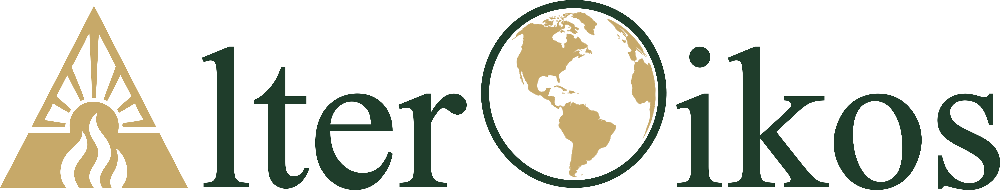
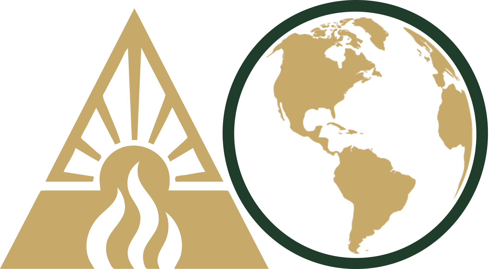

Δlter🌎ikos

Integrative Science for a Changing World
About the Initiative
The AlterOikos Initiative is an innovative and interdisciplinary research program dedicated to deciphering the complexity of life in systems under transformation. Our purpose is to integrate multiple dimensions of biological and social knowledge to understand the gears of planetary resilience in the Anthropocene.
The name—which joins the Latin Alter (change) to the Greek Oikos (ecology/home)—synthesizes our philosophy: change is not just an object of study, but the lens through which we interpret nature.
🔎 Frontiers of Knowledge
Our work is inherently transverse, moving between fundamental ecological theory and evidence-based conservation practice. The initiative is organized around three fundamental scientific axes:
1. Eco-Evolutionary Dynamics and Disturbance Ecology
We investigate the bidirectional feedbacks between ecological and evolutionary processes. Our focus lies on how rapid and intense disturbances—such as fire regimes and thermal stress—shape natural selection, phenotypic plasticity, and the persistence of populations and communities.
2. Biogeography, Pyrogeography, and Climate Change
We explore the distribution of life and fire across space and time. By crossing climate change data with the geographic history of landscapes, we seek to anticipate how global transformations rearrange biotic frontiers and the natural cycles of tropical and transition ecosystems.
3. Management, Conservation, and Human Dimensions
We understand that biodiversity conservation is inseparable from human reality. This axis is dedicated to natural resource management and social conservation, integrating human dimensions and public engagement to ensure that science translates into just and effective socio-environmental solutions.
🏛️ Strategic Structure
🚀 Mission
“To investigate the dynamics of change in biological systems, integrating ecology and evolution to understand how biodiversity responds, adapts, and shapes environments under disturbance.”
💡 Vision
“To become an international reference in the science of change (Alter-Ecology), leading cutting-edge research that connects eco-evolutionary theory to the practical conservation of tropical ecosystems.”
🎯 Objectives
Decipher Feedbacks: Quantify eco→evo and evo→eco interactions in populations and communities subjected to environmental gradients and fire regimes.
Methodological Innovation: Develop and apply robust analytical tools (in R, Python, and Remote Sensing) for long-term data.
Leadership Training: To train critical and technically exceptional researchers, promoting a diverse and collaborative science.
Applied Science: Translate evolutionary findings into strategic guidelines for biodiversity management and conservation in the Anthropocene.
✨ Values (The AlterOikians DNA)
| Value | What does it mean in practice? |
|---|---|
| Scientific Rigor | Strict adherence to method, transparency, and the pursuit of evidence-based truth. |
| Adaptability | Like the systems we study, the group evolves and adjusts to new challenges and technologies. |
| Open Science | Commitment to reproducibility, Open Data, and open-source code sharing. |
| Intellectual Restlessness | The constant desire to “alter” the status quo of knowledge and ask the difficult questions. |
| Knowledge Symmetry | Valorization of traditional and local knowledge (Indigenous, Quilombolas, Geraizeiros) as fundamental partners in fire ecology and conservation. |
| Citizen Science & Engagement | Commitment to breaking down university walls, translating data into dialogue, and involving the public in the construction of knowledge. |
| Radical Collaboration | Horizontal and transdisciplinary partnerships seeking integrated solutions for complex problems. |
Curiosidades
Etymology (origin of the name)
The choice of the name AlterOikos is linguistically rich and carries significant academic weight, as it joins two of the founding languages of scientific thought: Latin and Greek.
-
The Prefix: Alter (Latin)
Origin: From the Latin alter, meaning “other”, “the other of two”, or “to change”.
Scientific Significance: In biology and ecology, it refers to the concepts of alteration and modification.
Application: Represents the central focus of our research: disturbance. Fire and anthropogenic environmental changes are the agents that alter the original state of systems, forcing phenotypic and demographic responses.
-
The Suffix: Oikos (Greek)
Origin: From the Ancient Greek οἶκος (oîkos), meaning “house”, “residence”, “heritage”, or “family”.
Scientific Significance: This is the fundamental morphological root of the word Ecology (Oikos + Logos = the study of the house).
Application: Defines our study setting. It is not just about isolated organisms, but the “home” of these organisms—the environment, the interactions, and the ecosystem structure.
The Synthesis: “The Ecology of Change” When we merge the two terms, AlterOikos can be literally translated as “The Altered House” or, in a more academic interpretation, “The Ecology of Change”.
Visual Identity Concept
The visual identity of AlterOikos synthesizes, in a minimalist way, the central processes that structure our research: environmental change, ecological dynamics, and macrogeographic scale.
Δ (Delta) — change and ecological dynamics

The symbol Δ, integrated into the letter “A”, represents transformation. In scientific language, the delta is widely used to indicate variation—a fundamental concept for understanding ecological and evolutionary responses to environmental disturbances. Inside the Δ, two elements structure this idea:
Solar rays: indicating energy and renewal, referring to the natural cycles that sustain ecosystems.
Flames: representing fire as an ecological process—not just as a disturbance, but as a structuring agent of biodiversity.
O (Globe) — oikos and macrogeographic scale

The “O” of Oikos is represented as a globe, symbolizing the concept of “home” in ecology—the integrated system where organisms and the environment interact. The emphasis on the Americas reflects:
The geographic context of the research.
The connection with Neotropical systems. The outer ring suggests integrity and interconnectivity between ecological systems.
Integration Δ–O

The juxtaposition of the two symbols (Δ–O) expresses the conceptual core of the group: how environmental changes shape ecological systems across multiple scales.